Welcome to the 「VSArrange」AddIn
概要
VisualStudioプロジェクトフォルダ下にある要素を整理します。
具体的には以下の処理を行います。
- プロジェクト未登録のファイル、フォルダをプロジェクトに追加
- （ただし、追加したくないものは除外）
- プロジェクトに登録されているが、削除されるなどして存在していないファイル、フォルダを
プロジェクトからアンロード - 「ビルドアクション」「出力ディレクトリにコピー」の設定（ver 0.2.3～)
- 処理内容をウインドウ、ファイルに出力（ver 0.2.3～)
- 上記処理をコンソール上から実行（ver 0.2.5～)
お知らせ
- 2011/05/02 Koropokkur.NET 0.2.5をリリースしました。ダウンロード
- 2011/03/21 Koropokkur.NET 0.2.4をリリースしました。
- 2010/04/18 Koropokkur.NET 0.2.3をリリースしました。
(Koropokkur.NETはこのアドインが含まれるアドイン集です）
アドイン登録方法
アドインの登録方法はこちらをご覧下さい。使い方
１．プロジェクト、またはソリューションのアイコン上で右クリックメニューを表示させます。
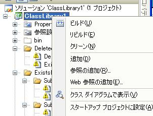
２．メニューの下の方にある「プロジェクト要素の整理」を選択します。
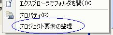
３．削除ファイルはプロジェクトから除外、未登録ファイルは追加されます。
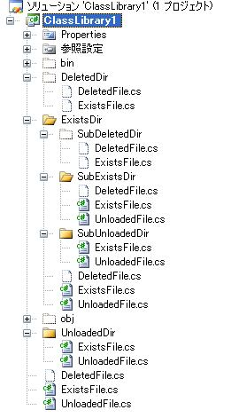
プロジェクト除外条件の設定方法
(Koropokkur.NET 0.2.3以降)１．VisualStudioの「ツール」メニューから「Koropokkurの設定」→「VSArrange」を選択します。
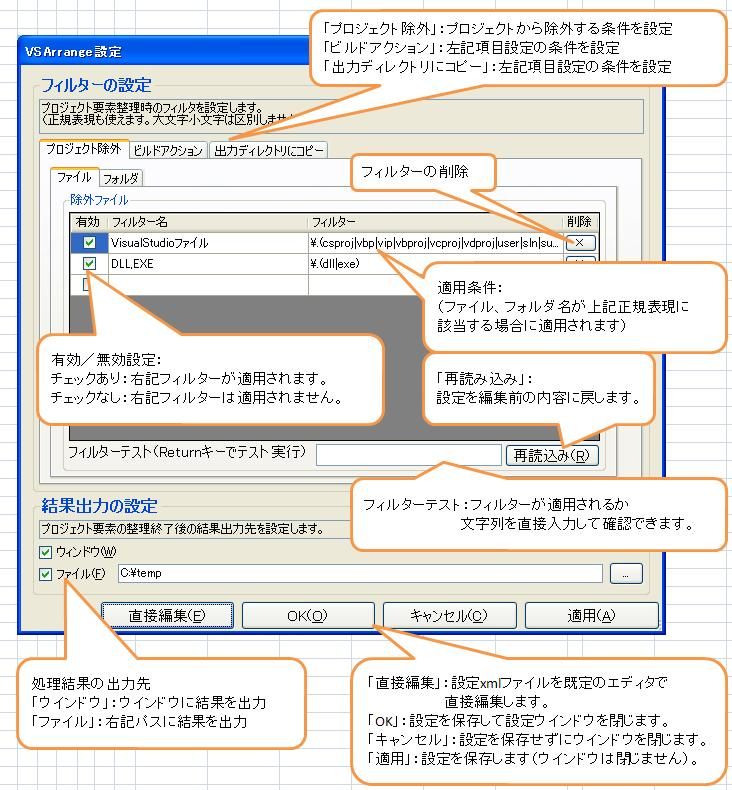２．以下、「プロジェクト除外」「ファイル」の設定方法です。
（他項目のフィルター設定も操作方法は同様です）
２a．プロジェクトに追加したくないファイル名、フォルダ名を設定します（正規表現も使えます）。
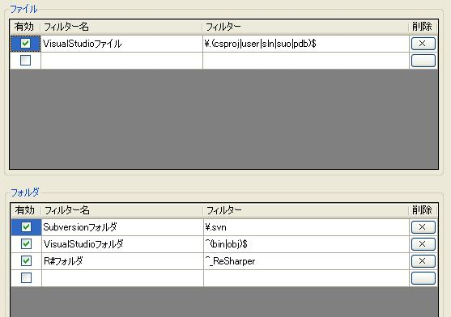２b．除外条件は残しておきたいが適用はしたくない場合は「有効」チェックボックスをOFFにします。
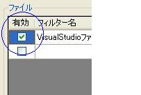２c．除外条件を削除したい場合は「×」ボタンを押します。
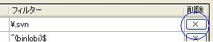２d. 「再読込み」ボタンを押すと設定ファイルを再度読み込み、編集前の状態に戻します。
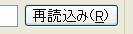３a. フィルター入力欄の下にあるテキストボックスに任意の文字列を入力し、
Return(Enter)キーを押すと現在編集中のフィルター条件に
入力した文字列が引っかかるか確認することができます。
３b. 入力した文字列がフィルターに引っかかるとき、「OK」と表示されます。
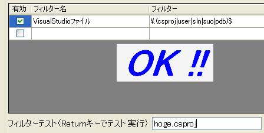３c. 入力した文字列がフィルターに引っかからないとき、「NG」と表示されます。
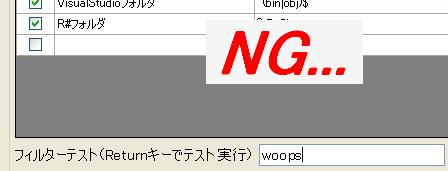４．「OK」ボタンを押すと変更した設定で保存し、設定画面が閉じられます。
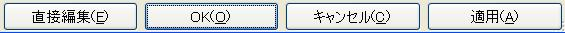５．「使い方」に記載した手順で「（全）プロジェクト要素の整理」を選ぶと
設定した除外条件に従ってプロジェクト要素の整理が行われます。
コンソールからの実行
(Koropokkur.NET 0.2.5以降)コンソールアプリですが、VisualStudioのアドインが使用できるエディションが
インストールされている必要があります。
ダウンロードしたKoropokkur.NET下の「build」フォルダ内にある「VSArrangeConsole.exe」を使用します。
設定ファイルの設定方法はアドイン上から設定する場合と同様です(「設定ファイル編集エディタ」参照)。
引数 (VSArrangeConsole.exe (引数1) [引数2] [引数3])
- 1:処理対象のソリューションorプロジェクトのフルパス（必須）
- 2:処理対象のプロジェクト名（無指定の場合は全プロジェクトを対象とする）（任意）
（「,」区切りで複数プロジェクト指定可能） - 3:設定ファイルのフルパス（無指定の場合はVSArrangeConsole.exeと同じフォルダ内にあるものを使用）（任意）
処理内容の出力設定は「log4net」を使用します。
同じく「build」フォルダ下にある「VSArrangeConsole.exe.config」に設定を記述して
「lib」フォルダ下にあるlog4net.dllと一緒にVSArrangeConsole.exeと同じフォルダに置いて下さい。
（詳細な設定方法はコチラ等をご覧下さい）
詳細なログ出力を必要としない場合はログレベルを「INFO」に設定して下さい。
<?xml version="1.0" encoding="utf-8" ?>
<configuration>
<configSections>
<section name="log4net" type=" log4net.Config.Log4NetConfigurationSectionHandler,log4net" />
</configSections>
<log4net>
<!-- ログ出力先の定義 -->
<!-- ファイル出力 -->
<appender name="LogFileAppender" type="log4net.Appender.FileAppender" >
<!-- 作成するログファイル -->
<param name="File" value="C:\vsarrange.log" />
<!-- true:追加書込, false:上書き -->
<param name="AppendToFile" value="true" />
<!-- ログの書式 -->
<layout type="log4net.Layout.PatternLayout">
<param name="ConversionPattern" value="%d [%t] %-5p %c - %m%n" />
</layout>
</appender>
<!-- コンソール出力 -->
<appender name="ConsoleAppender" type="log4net.Appender.ConsoleAppender">
<layout type="log4net.Layout.PatternLayout">
<param name="ConversionPattern" value="%d [%t] %-5p %c - %m%n" />
</layout>
</appender>
<root>
<!-- ログのレベルを指定 -->
<!-- すべてのログレベルを出力 -->
<level value="ALL" />
<!-- どのログ出力先を使用するか -->
<appender-ref ref="LogFileAppender" />
<appender-ref ref="ConsoleAppender" />
</root>
</log4net>
</configuration>
設定ファイル編集エディタ
(Koropokkur.NET 0.2.5以降)ダウンロードしたKoropokkur.NET下の「build」フォルダ内にある「VSArrangeConfig.exe」を起動すると
同フォルダにある設定ファイル（VSArrange.config）を読み取り、設定画面が表示されます。
設定ファイルがない場合は新規作成します。
使用方法はアドイン上から設定する場合と同様です(「設定ファイル編集エディタ」参照)。